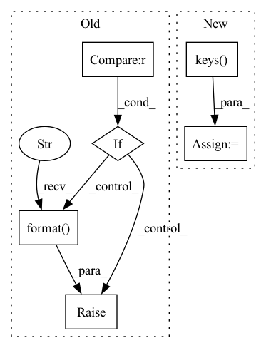

Pattern ID :19672
Before Change
input_device = model.input_device
args = inspect.getfullargspec(model.forward).args
args_dict = {}
if any(arg not in args for arg in required_argument):
missing = []
for arg in required_argument:
if arg not in args:
missing.append(arg)
raise RuntimeError("Model missing required argument field(s): {}, "
"check your storage functions."
.format( missing) )
for na in named_args:
for k, v in na.items():
if k in args:After Change
args_dict[k] = v
// check for necessary args
missing = required_args - set(args_dict.keys() )
if len(missing) > 0:
raise RuntimeError("\n"
"The signature of the forward function of Model {} "In pattern: SUPERPATTERN
Frequency: 3
Non-data size: 6
Instances Fragment ID: 64020864
Project Name: iffix/machin
Commit Name: 344fc0fd5808cb59488596fbb7e88070b0a384a3
Time: 2020-07-31
Author: hanhanmumuqq@163.com
File Name: machin/frame/algorithms/utils.py
M Class Name: AnonimousClass
N Class Name: AnonimousClass
M Method Name: safe_call(1)
N Method Name: safe_call(1)
M Parent Class:
N Parent Class:
M File Name: machin/frame/algorithms/utils.py
N File Name: machin/frame/algorithms/utils.py
M Start Line: 107
M End Line: 124
N Start Line: 74
N End Line: 145
Before Change
pattern = os.path.join(output_directory, "pretrain_state_*.pt")
paths = glob.glob(pattern)
paths.sort()
if not paths == 0 or len(paths) == 1 and "init" in paths[0]:
raise FileNotFoundError("Could not find valid pretrain state file in {}".format( output_directory) )
else:
return paths[-1]
After Change
if len(paths_by_epoch) == 0:
raise FileNotFoundError("Could not find valid pre-train state file in {}".format(output_directory))
max_epoch = max(paths_by_epoch.keys() )
return paths_by_epoch[max_epoch]
Fragment ID: 64020837
Project Name: sungnyun/understanding-cdfsl
Commit Name: aa94f9f7024b4379014c461bc968897a5b8b86dc
Time: 2021-12-27
Author: itsnamgyu@gmail.com
File Name: paths.py
M Class Name: AnonimousClass
N Class Name: AnonimousClass
M Method Name: get_final_pretrain_state_path(1)
N Method Name: get_final_pretrain_state_path(1)
M Parent Class:
N Parent Class:
M File Name: paths.py
N File Name: paths.py
M Start Line: 78
M End Line: 85
N Start Line: 79
N End Line: 92
Before Change
num_moidifiers = len(self.modifiers)
modifier_keys = [int(idx) for idx in state_dict.keys()]
if any(idx < 0 or idx >= num_moidifiers for idx in modifier_keys):
raise RuntimeError(
"Invalid modifier index in state dict for ScheduledModifierManager for"
"ScheduledModifierManager with {} modifiers. Given indices: {}".format(
num_moidifiers, modifier_keys
)
)
for idx, modifier_state_dict in state_dict.items():
self.modifiers[int(idx)].load_state_dict(modifier_state_dict)
After Change
modifiers_index = {mod.identifier(): mod for mod in self.modifiers}
if strict:
modifier_keys = {key for key in modifiers_index.keys() }
state_dict_keys = {key for key in state_dict.keys()}
diff = modifier_keys.symmetric_difference(state_dict_keys)
if diff:
raise IndexError(
f"Found extra keys: {state_dict_keys - modifier_keys} " Fragment ID: 64020859
Project Name: neuralmagic/sparseml
Commit Name: 35be148dfed1e7ea46e5fbc4e12972d7ccce121a
Time: 2021-05-12
Author: mark@neuralmagic.com
File Name: src/sparseml/pytorch/optim/manager.py
M Class Name: ScheduledModifierManager
N Class Name: ScheduledModifierManager
M Method Name: load_state_dict(3)
N Method Name: load_state_dict(2)
M Parent Class: BaseManager,Modifier
N Parent Class: BaseManager,Modifier
M File Name: src/sparseml/pytorch/optim/manager.py
N File Name: src/sparseml/pytorch/optim/manager.py
M Start Line: 126
M End Line: 136
N Start Line: 271
N End Line: 300